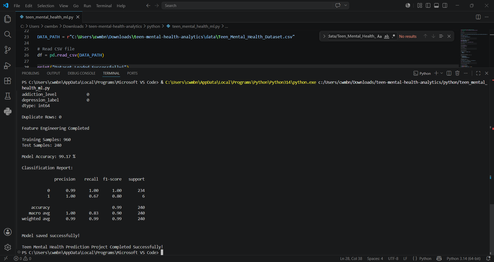
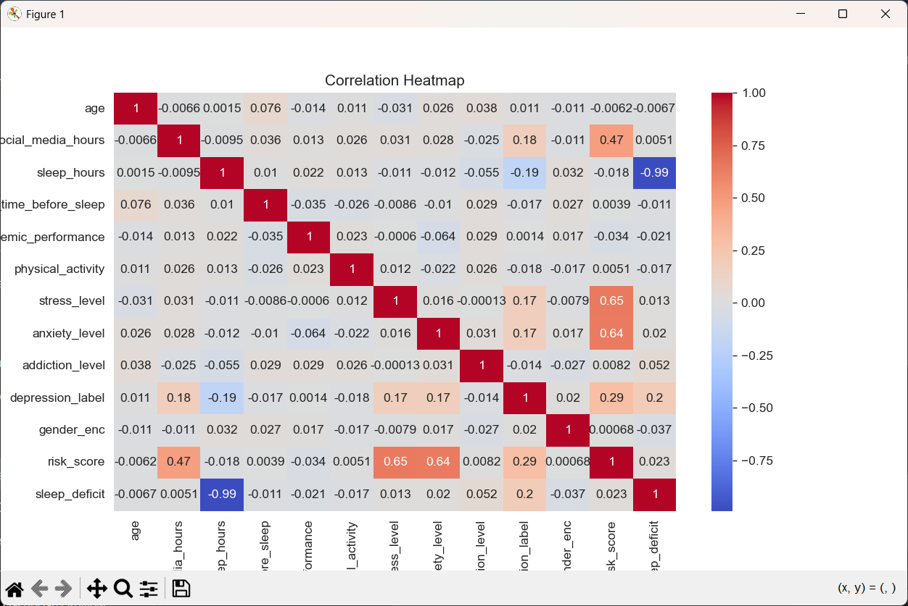
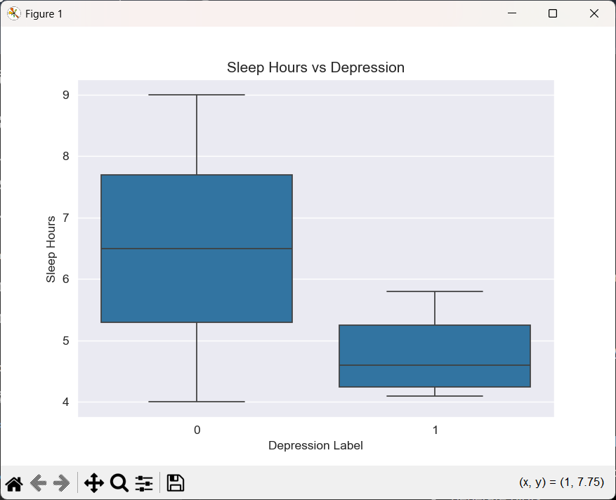

Project Visualizations

Depression Distribution
Distribution of depressed and non-depressed teens in the dataset.

Sleep vs Depression
Visualization showing how sleep duration differs between healthy and depressed teens.

Correlation Heatmap
Correlation analysis between stress, anxiety, sleep, and social media usage.

Feature Importance
Random Forest feature importance highlighting major mental health risk factors.
Popular Social Media Platforms
Instagram
Heavy Instagram usage may increase comparison anxiety, screen addiction, and emotional stress among teenagers.
TikTok
Excessive short-video consumption may affect sleep, focus, and mental well-being.
WhatsApp
Constant messaging and online activity may increase stress and reduce offline social interaction.